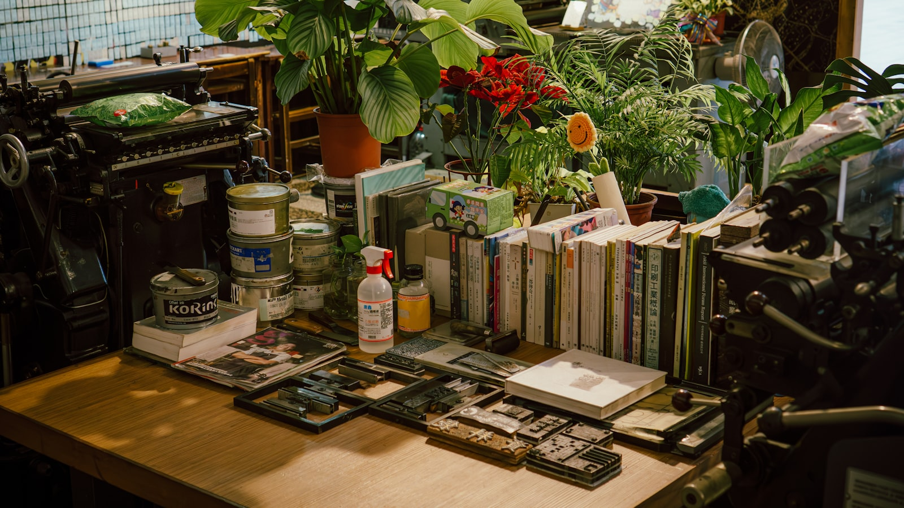

|
Site Menu
Work Info
Title: Command Calm Category: project Type: Research engineering / developer tool Focus: CLI interaction design, developer tooling, and workflow clarity Role: Designer and developer Collaborators: Independent project At A Glance
Dr. Jianyu Chen Python, terminal UI, lightweight automation 2026 Quick Links
|
Command CalmA lightweight terminal interface that reduces log noise and makes iterative technical work easier to follow.  Overview
Command Calm starts from a simple observation: terminal workflows are powerful, but long-running tasks often produce output that is difficult to scan and reason about. The project adds lightweight structure so logs, task progress, and checkpoints remain readable during research and engineering work. Why It Works In This Template
This example shows how Retroframe can present a practical developer tool with enough context to feel real, without requiring a full-length case study. It is a useful default for internal tools, research systems, and technical prototypes. |